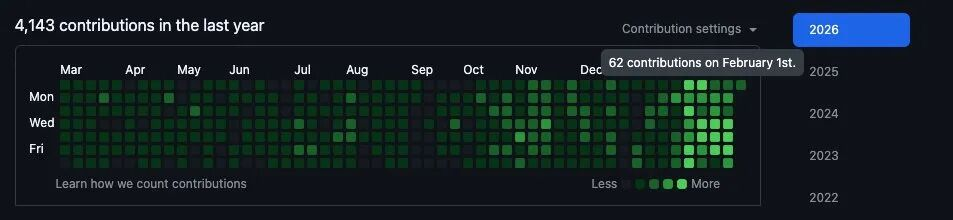
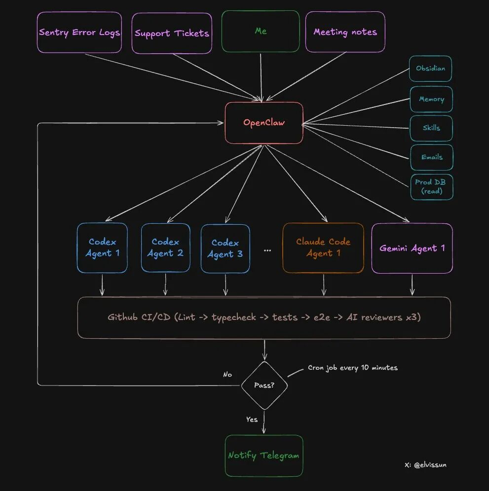
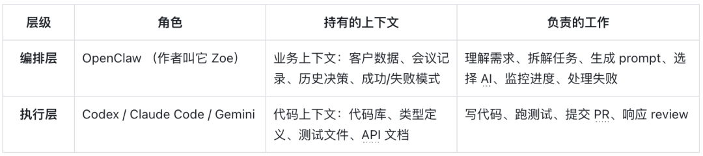
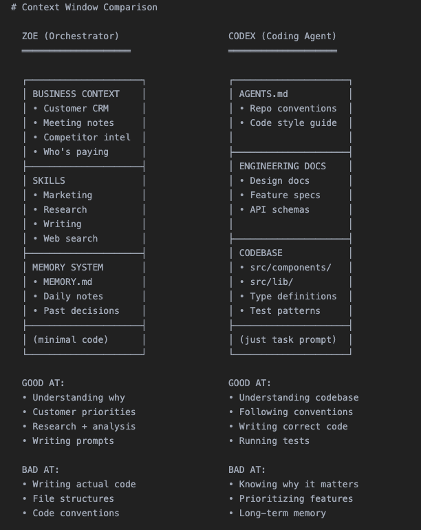

Datawhale干货
教程：OpenClaw + Codex/Claude Code
Datawhale干货
教程：OpenClaw + Codex/Claude Code
今天分享一个很炸裂的实践案例。（文末附教程）
一个独立开发者，用 OpenClaw + Codex/CC 搭了一套 AI Agent系统，实现了什么效果呢？

一天 94 次提交，30 分钟完成 7 个 PR，而且这一天他还开了 3 个客户会议，编辑器都没打开过。
这是真实发生在 2026 年 1 月的事。作者把整个系统的架构、工作流、代码配置都公开了，看完觉得这个思路太值得学习了，所以整理成这篇文章分享给你。
如果你也在用 Codex 或 Claude Code，或者对 OpenClaw 感兴趣，这篇文章会给你很多启发。
一个人，一天 94 次代码提交
先看几个数据，感受一下这套系统的威力：
过去 4 周的真实数据：
单日最高 94 次提交（平均每天 50 次提交）
30 分钟内完成 7 个 PR
从想法到上线的速度快到可以“当天交付客户需求”
作者用这套系统在做一个真实的 B2B SaaS 产品，配合创始人直销，大部分功能需求都能当天搞定。速度快到什么程度？客户提需求，当天就能看到效果，直接转化成付费用户。
成本呢？每月 $190（Claude $100 + Codex $90），新手起步 $20 就能跑起来。
你可能会问：这是不是堆了一堆 AI 工具，然后疯狂生成垃圾代码？
不是的。作者的 Git 历史看起来像是“刚招了一个开发团队”，但实际上只有他一个人。关键变化是：他从“管理 Claude Code”变成了“管理一个 AI 管家，这个管家再去管理一群 Claude Code”。
1 月之前：直接用 Codex 或 Claude Code 写代码
1 月之后：用 OpenClaw 作为编排层，让它调度 Codex/Claude Code/Gemini
这个转变带来的效果是：系统能自动完成几乎所有小到中等复杂度的任务，不需要人工介入。
为什么 Codex 和 Claude Code 单独用不够好？
这时候，你可能会想：Codex 和 Claude Code 已经很强了，为什么还要加一层编排？
作者给出的答案很直接：Codex 和 Claude Code 对你的业务几乎一无所知。它们只看到代码，看不到完整的业务图景。
这里有个根本性的限制：上下文窗口是固定的，你只能二选一。
你必须做选择往里面塞什么：
塞满代码 → 没空间放业务上下文
塞满客户历史 → 没空间放代码库
所以单独用 Codex 或 Claude Code 时，你会遇到这些问题：
它不知道这个功能是为哪个客户做的
它不知道上次类似需求为什么失败了
它不知道你的产品定位和设计原则
它只能根据当前的代码和你的 prompt 来工作
OpenClaw 改变了这个等式。
它充当编排层，位于你和所有 AI 工具之间。它的角色是：
持有所有业务上下文（客户数据、会议记录、历史决策、成功/失败案例）
把业务上下文翻译成精确的 prompt，喂给具体的 Agent
让这些 Agent 专注做它们擅长的事：写代码
类比一下：
Codex/Claude Code = 专业厨师，只管做菜
OpenClaw = 主厨，知道客人口味、食材库存、菜单定位，给每个厨师下达精确指令
这就是为什么需要双层系统：通过上下文的专业化分工，而不是换更强的模型。
双层系统的具体架构：编排层 + 执行层
来看看这套系统的具体架构。

两层，各司其职：

OpenClaw（编排层）能做什么？
读取 Obsidian 笔记里的所有会议记录（自动同步）
访问生产数据库（只读权限）获取客户配置
有管理员 API 权限，可以直接给客户充值解除阻塞
根据任务类型选择合适的代理（Codex/Claude Code/Gemini）
监控所有代理的进度，失败了会分析原因并调整 prompt 重试
完成后通过 Telegram 通知作者
Agent（执行层）能做什么？
读写代码库
运行测试和构建
提交代码和创建 PR
响应 code review 的反馈
关键点：执行层的 Agent 永远不会接触生产数据库，也不会看到客户的敏感信息。它们只拿到“完成这个任务需要知道的最小上下文”。

这个设计很聪明：安全边界清晰，同时保证了效率。
完整工作流：从客户需求到 PR 合并的 8 个步骤
现在进入核心部分。用作者上周的一个真实案例，带你走一遍完整流程。
背景： 一个企业客户打电话来，说希望能复用他们已经配置好的设置，在团队内共享。第 1 步：客户需求 → OpenClaw 理解并拆解
通话结束后，作者和 Zoe（他的 OpenClaw） 聊了聊这个需求。
这里的神奇之处：零解释成本。因为所有会议记录自动同步到 Obsidian, Zoe 已经读过了通话内容，知道客户是谁、他们的业务场景、现有配置。
作者和 Zoe 一起把需求拆解成：做一个模板系统，让用户保存和编辑现有配置。
然后 Zoe 做了三件事：
给客户充值 — 用管理员 API 立即解除客户的使用限制
拉取客户配置 — 从生产数据库（只读）获取客户现有的设置
生成 prompt 并启动代理 — 把所有上下文打包，喂给 Codex
第 2 步：启动代理
Zoe 为这个任务创建了：
一个独立的 git worktree（隔离的分支环境）
一个 tmux 会话（让 Agent 在后台运行）
为什么用 tmux? 因为可以中途干预。
如果 AI 走偏了，不用杀掉重来，直接在 tmux 里发指令：
同时，任务会被记录到一个 JSON 文件里：
第 3 步：自动监控
一个 cron 任务每 10 分钟检查一次所有代理的状态。
重点：它不是去“问”Agent 进度如何（那样很费 token），而是检查客观事实：
tmux 会话还活着吗？
有没有创建 PR?
CI 状态如何？
如果失败了，是否需要重启？（最多重试 3 次）
这个监控脚本是 100% 确定性的，非常省 token，只在需要人工介入时才会通知作者。
这其实是改进版的 Ralph Loop，后面会详细讲。
第 4 步：Agent 创建 PR
Agent 写完代码，提交，推送，然后用 gh pr create --fill 创建 PR。
注意：这时候作者不会收到通知。 因为一个 PR 本身不代表“完成”。
“完成”的定义是：
✅ PR 已创建
✅ 分支已同步到 main（没有冲突）
✅ CI 通过（lint、类型检查、单元测试、E2E 测试）
✅ Codex reviewer 通过
✅ Claude Code reviewer 通过
✅ Gemini reviewer 通过
✅ 如果有 UI 改动，必须包含截图
只有全部满足，才算真正完成。
第 5 步：自动化 Code Review
每个 PR 会被三个 Agent 审查：
Codex Reviewer — 最靠谱的审查者
擅长发现边界情况
能抓到逻辑错误、缺失的错误处理、竞态条件
误报率很低
Gemini Code Assist Reviewer — 免费且好用
能发现其他审查者漏掉的安全问题和扩展性问题
会给出具体的修复建议
不用白不用
Claude Code Reviewer — 基本没用
过度谨慎，总是建议“考虑添加……”
大部分建议都是过度设计
除非标记为“critical”，否则直接跳过
三个审查者都会直接在 PR 里评论。
第 6 步：自动化测试
CI 管道会跑：
Lint 和 TypeScript 检查
单元测试
E2E 测试
Playwright 测试（在和生产环境一模一样的预览环境里跑）
上周新加的规则：如果 PR 改了 UI，必须在描述里附上截图，否则 CI 直接失败。
这个规则大幅缩短了 review 时间 — 作者看一眼截图就知道改了什么，不用点进预览环境。
第 7 步：人工 Review
现在，作者收到 Telegram 通知：“PR #341 准备好了，可以 review。”
这时候：
CI 全绿
三个 AI 审查者都批准了
截图展示了 UI 变化
所有边界情况都在 review 评论里记录了
作者的 review 只需要 5-10 分钟。 很多 PR 他甚至不看代码，只看截图就直接合并了。
第 8 步：合并
PR 合并。每天有个 cron 任务清理孤立的 worktree 和任务记录。
完整流程走完，从客户需求到代码上线，可能只用了 1-2 小时，而作者的实际投入可能只有 10 分钟。
三个让系统更聪明的机制
机制 1：改进版 Ralph Loop — 不只是重复，而是学习
你可能听过 Ralph Loop：从记忆拉取上下文 → 生成输出 → 评估结果 → 保存学习。
但大多数实现有个问题：每次循环用的 prompt 都一样。 学习到的东西改善了未来的检索，但 prompt 本身是静态的。
这套系统不一样。
当 Agent 失败时，Zoe 不会用同样的 prompt 重启。她会带着完整的业务上下文，分析失败原因，然后重写 prompt：
❌ 坏例子（静态 prompt）：
✅ 好例子（动态调整）:
Zoe 能做这种调整，因为她有执行层 Agent 没有的上下文：
客户在会议里说了什么
这家公司是做什么的
上次类似需求为什么失败了
更进一步，Zoe 不会等你分配任务，她会主动找活干：
早上： 扫描 Sentry → 发现 4 个新错误 → 启动 4 个 Agent 去调查和修复
会议后：扫描会议记录 → 发现 3 个客户提到的功能需求 → 启动 3 个 Codex
晚上： 扫描 git log → 启动 Claude Code 更新 changelog 和客户文档
作者散步回来，Telegram 上显示：“7 个 PR 准备好了。3 个新功能，4 个 bug 修复。”
成功的模式会被记录下来：
“这种 prompt 结构对账单功能很有效”
“Codex 需要提前拿到类型定义”
“总是要包含测试文件路径”
奖励信号是：CI 通过、三个 code review 通过、人工合并。任何失败都会触发循环。
时间越长，Zoe 写的 prompt 越好，因为她记得什么能成功。
机制 2：Agent 选择策略 — 不同任务找不同的专家
不是所有 Agent 都一样强。作者总结的选择策略：
Codex(gpt-5.3-codex) — 主力
后端逻辑、复杂 bug、多文件重构、需要跨代码库推理的任务
慢但彻底
占 90% 的任务
Claude Code(claude-opus-4.5) — 速度型选手
前端工作
权限问题少，适合 git 操作
（作者以前更常用，但 Codex 5.3 出来后就换了）
Gemini — 设计师
有设计审美
对于漂亮的 UI，先让 Gemini 生成 HTML/CSS 规范，再交给 Claude Code 在组件系统里实现
Gemini 设计，Claude 建造
Zoe 会根据任务类型自动选择 Agent，并在它们之间传递输出。账单系统 bug 给 Codex，按钮样式修复给 Claude Code，新仪表盘设计先给 Gemini。
机制 3：瓶颈在哪？RAM
这里有个意外的限制：不是 token 成本，不是 API 速率，而是内存。
每个 Agent 需要：
自己的 worktree
自己的 node_modules
运行构建、类型检查、测试
5 个 Agent 同时跑 = 5 个并行的 TypeScript 编译器 + 5 个测试运行器 + 5 套依赖加载到内存。
作者的 Mac Mini(16GB RAM）最多同时跑 4-5 个 Agent，再多就开始 swap，而且得祈祷它们不要同时构建。
所以他买了一台 Mac Studio M4 Max(128GB RAM,$3500)，3 月底到货。他说到时候会分享值不值。
你也可以搭建：从零到运行只需 10 分钟
想试试这套系统？
最简单的方法：
把这整篇文章复制给 OpenClaw，告诉它：“按照这个架构，给我的代码库实现一套 Agent 集群系统。”
然后，它就会：
读取架构设计
创建脚本
设置目录结构
配置 cron 监控
10 分钟搞定。
你需要准备：
OpenClaw 账号
Codex 和/或 Claude Code 的 API 访问
一个 git 仓库
（可选）Obsidian 用于存储业务上下文
2026：一个人的百万美元公司
作者在文末说了一段话，我觉得很有启发性：
“我们会看到大量一个人的百万美元公司从 2026 年开始出现。杠杆是巨大的，属于那些理解如何构建递归自我改进 AI 系统的人。”
这就是它的样子：
一个 AI 编排者作为你的延伸（就像 Zoe 之于作者）
把工作委派给专门的 Agent，处理不同的业务职能
工程、客户支持、运营、营销
每个 Agent 专注于它擅长的事
你保持专注和完全控制
下一代创业者不会雇 10 个人去做一个人加一套系统就能做的事。 他们会这样构建——保持小规模，快速行动，每天发布。
现在 AI 生成的垃圾内容太多了。各种炒作，各种“任务控制中心”的花哨 demo，但没有真正有用的东西。
作者说他想做相反的事：少炒作，多记录真实的构建过程。真实的客户，真实的收入，真实的提交发布到生产环境，也有真实的失败。
这篇文章就到这里。
核心要点回顾：
双层架构：编排层持有业务上下文，执行层专注代码
完整自动化：从需求到 PR 的 8 步流程，大部分任务一次成功
动态学习：不是重复执行，而是根据失败原因调整策略
成本可控：起步 $20/月，重度使用 $190/月
如果你也在探索 AI 自动化的实践应用，希望这个案例能给你一些启发。
参考地址：
1. https://x.com/elvissun/status/2025920521871716562
一起“点赞”三连↓